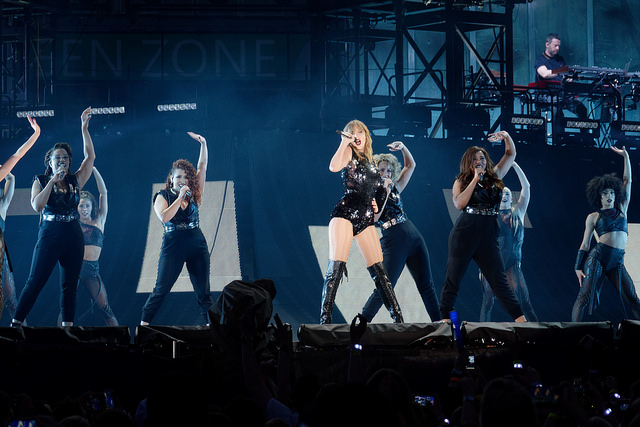

Taylor Swift
Taylor Swift is a 28-year-old pop and country music singer. Swift first relased her self-titled debut album in 2006 and quickly rose to fame. She has sold more than 40 million albums, won 10 Grammy's and made Rolling Stone's list of the 100 Greatest Songwriters of All Time in 2015, just to name a few accomplishments. She is valued at $320 million and has also appeared in a number of TV ads and movies. She currently has six albums released. Her vocals combined with handwritten lyrics evoke emotion and passion as well as tell a story to the audience that people of all ages can relate to.
"Delicate"
"Wildest Dreams"
"22"

"Back to December"